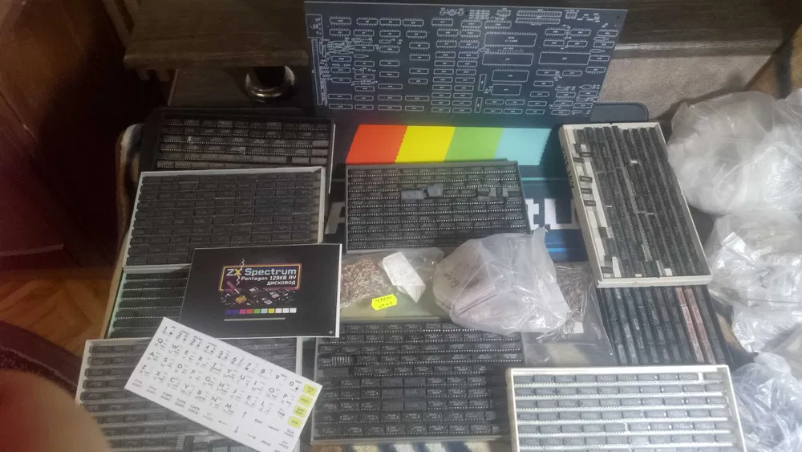

Pentagon 128 — це вибір тих, хто хоче доторкнутися до справжньої культури Спектрумізму 90-х. Даний набір є конструктором для самостійної збірки, що включає в себе перевірену часом та найстабільнішу версію плати.
Головною перевагою цієї ревізії є розведення під музичний процесор AY-3-8910 (або аналог) безпосередньо на материнській платі. Вам більше не потрібні додаткові перехідники для отримання якісного стереозвуку. Плата має виправлені таймінги, що забезпечує 100% сумісність з найскладнішими демо та іграми. У набір входять всі необхідні компоненти: від резисторів до прошитої ПЗП.
